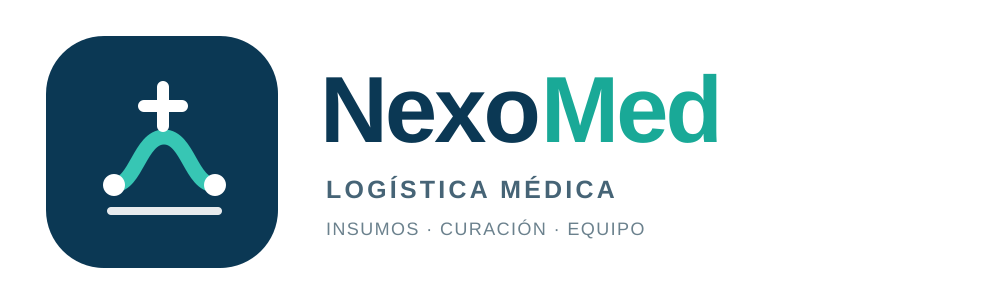
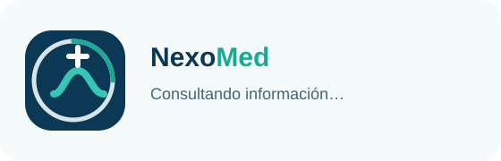

Iniciar sesión
Use el usuario que le asignó el administrador.
Uso exclusivo del personal autorizado. Cada acceso queda en la bitácora. La sesión se cierra tras 15 minutos sin actividad.

Use el usuario que le asignó el administrador.
Uso exclusivo del personal autorizado. Cada acceso queda en la bitácora. La sesión se cierra tras 15 minutos sin actividad.

Consultando información…Preparando descarga…